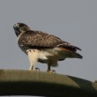

Birds, (Avians)
Great vision, recognizes all colors. Thin skulls, no teeth, kinetic jaw (can open their beaks 180 degrees for feeding! Bird’s feathers give pressure against the wind and shaped to create an airfoil for ease of flight. Man copied their anatomy to enable planes to fly! Birds have 4-chambered hearts and the average 250 beats/minute. Birds have to incubate their eggs and the average gestation period is 14-21 days.